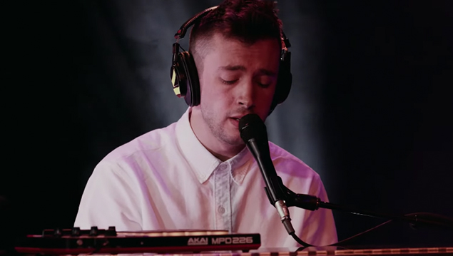

Tyler Joseph

Tyler Robert Joseph is an American singer, songwriter, musician, rapper, and record producer for Twenty One Pilots.As a member of Twenty One Pilots he has been nominated for six Grammy Awards, of which he has won one.